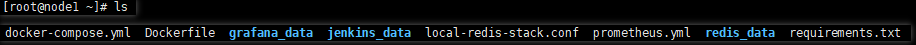

Prometheus And Grafana Data Presentation
Use prometheus to collect aiotest test data. The default stats_exporter port is 8089, which can be reset on the command line
aiotest -f aiotestfile -p 8000
Docker deploys jenkins,prometheus,grafana,redis,aiotest,node-exporter services
Five hosts, root account, all files are in the same directory 
# linux host:port 192.168.0.10:22, CPU:4
docker-compose -f docker-compose.yml up -d
docker-compose.yml
version: '3'
services:
jenkins:
image: jenkins/jenkins
container_name: jenkins
user: root
restart: unless-stopped
ports:
- 8080:8080
- 50000:50000
volumes:
- $PWD/jenkins_data:/var/jenkins_home
- /var/run/docker.sock:/var/run/docker.sock
- /root/.ssh:/root/.ssh
prometheus:
image: prom/prometheus:latest
container_name: prometheus
user: root
restart: unless-stopped
ports:
- 9090:9090
command:
- --config.file=/etc/prometheus/prometheus.yml
volumes:
- $PWD/prometheus.yml:/etc/prometheus/prometheus.yml:ro
grafana:
image: grafana/grafana-enterprise
container_name: grafana
user: root
restart: unless-stopped
ports:
- 3000:3000
command:
- --config.file=/etc/prometheus/prometheus.yml
volumes:
- $PWD/grafana_data:/var/lib/grafana
depends_on:
- prometheus
redis:
image: redis/redis-stack:latest
container_name: redis
user: root
restart: unless-stopped
volumes:
- $PWD/redis_data/:/data
- $PWD/local-redis-stack.conf:/redis-stack.conf
ports:
- 6379:6379
node-exporter:
image: prom/node-exporter:latest
container_name: node-exporter
user: root
restart: unless-stopped
volumes:
- /proc:/host/proc:ro
- /sys:/host/sys:ro
- /:/rootfs:ro
command:
- '--path.procfs=/host/proc'
- '--path.rootfs=/rootfs'
- '--path.sysfs=/host/sys'
- '--collector.filesystem.mount-points-exclude=^/(sys|proc|dev|host|etc)($$|/)'
ports:
- 9100:9100
aiotest:
image: aiotest:latest
build: .
prometheus.yml
global:
scrape_interval: 1m
scrape_configs:
- job_name: prometheus
static_configs:
- targets: ["localhost:9090"]
# Collect resource usage and performance data of test hosts
- job_name: "192.168.0.10"
static_configs:
- targets: ["192.168.0.10:9100"]
- job_name: "192.168.0.11"
static_configs:
- targets: ["192.168.0.11:9100"]
- job_name: "192.168.0.12"
static_configs:
- targets: ["192.168.0.12:9100"]
- job_name: "192.168.0.13"
static_configs:
- targets: ["192.168.0.13:9100"]
- job_name: "192.168.0.14"
static_configs:
- targets: ["192.168.0.14:9100"]
# Collect aiotest load test data
- job_name: aiotest
scrape_interval: 5s
static_configs:
- targets: ["192.168.0.10:8089"]
labels:
instance: aiotest
local-redis-stack.conf
# Set a password
requirepass 123456
Dockerfile
FROM python:3.11-slim as base
FROM base as builder
RUN apt-get update && apt-get install -y git
RUN python -m venv /opt/venv
ENV PATH="/opt/venv/bin:$PATH"
COPY requirements.txt /build/requirements.txt
RUN python3 -m pip install -U pip && pip install -r /build/requirements.txt
FROM base
COPY --from=builder /opt/venv /opt/venv
ENV PATH="/opt/venv/bin:$PATH"
# turn off python output buffering
ENV PYTHONUNBUFFERED=1
USER root
WORKDIR /root/aiotest
EXPOSE 8089 5557
The other hosts progressively start the node-exporter service, and build Aiotest images
# 192.168.0.11
# 192.168.0.12
# 192.168.0.13
# 192.168.0.14
docker-compose -f docker-compose.yml up -d
docker-compose.yml
version: '3'
services:
node-exporter:
image: prom/node-exporter:latest
container_name: node-exporter
user: root
restart: unless-stopped
volumes:
- /proc:/host/proc:ro
- /sys:/host/sys:ro
- /:/rootfs:ro
command:
- '--path.procfs=/host/proc'
- '--path.rootfs=/rootfs'
- '--path.sysfs=/host/sys'
- '--collector.filesystem.mount-points-exclude=^/(sys|proc|dev|host|etc)($$|/)'
ports:
- 9100:9100
aiotest:
image: aiotest:latest
build: .